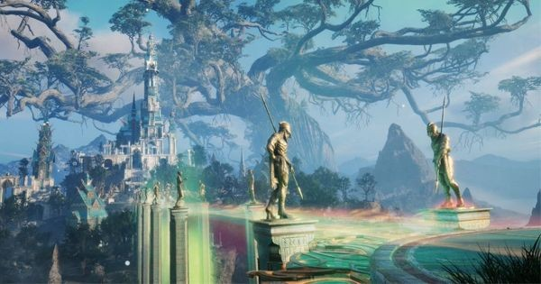
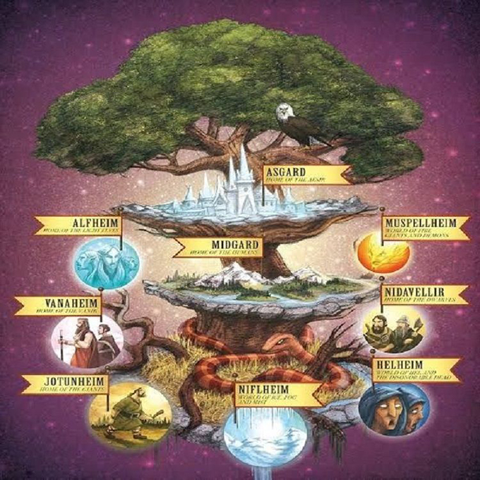

Apa itu YGGDRASIL? Dalam mitologi nordik
Di tulis oleh Rama Refin, pada 10 november 2022.
Ada pohon besar bernama Yggdrasil (baca: Igdrasil) yang menghias langit di dunia gim Valheim. Jika pemain mau menelusuri ujung asalnya, yang ada hanyalah air terjun lautan raksasa di ujung dunia. Yggdrasil sendiri adalah pohon kehidupan dalam mitologi Nordik. Wajar bila ada pohon itu di sana, karena menurut rilis, gim itu diadaptasi dari kepercayaan era Viking itu, dan meyakini dunia terbagi sembilan dunia. Sembilan dunia dalam mitologi Nordik sendiri adalah Niflheim (dunia kabut), Helheim (tempat terakhir jiwa), Jötunheim, Nidavellir (dunia kurcaci), Vanaheim (tempat Vanir), Muspellheim, Midgard (dunia manusia), Alfheim (dunia peri), dan Asgard (tempat para dewa). Tak hanya di dunia gim yang rilis awal 2021 itu, Yggdrasil juga muncul dalam sastra yang ditulis Artur Lundkvist sebagai perenungan kehidupan dirinya pada pohon dan hutan. “Dalam setiap manusia, ada pohon, dan di setiap pohon, ada manusia, saya merasakannya, pohon keajaiban di dalam diri manusia, dan manusia itu terperangkap dalam pohon " tulisnya di buku Det talande trädet (The talking tree) tahun 1960. Manuskrip terkait Yggdrasil dikoleksi pada 1643 oleh uskup Islandia, Brynjolfur Sveinsson. Isinya adalah syair Edda, yang kemudian diterjemahkan dalam bahasa Latin sebagai Codex Regius. Dalam syair itulah pertama kali ditemukan simbol kuno Yggdrasil. Dalam mitologi Norse Kuno, Yggdrasil disebut Mimameidr, yakni pohon raksasa yang menyangga Alam Semesta.
Yggdrasil digambarkan seperti pohon yang menopang alam semesta. Maka, sebelum disebut Yggdrasil, pohon ini juga dinamai Mimameidr oleh masyarakat Nordik Kuno yang berarti penyangga alam semesta. Pohon ini memiliki tiga akar yang menjulang ke atas menuju Niflheim, Jötunheim, dan ke Asgard. Kemudian di dasarnya terdapat tiga sumur, yakni Udarbrunnr (Sumur Nasib) yang diairi para Norn, Hvergelmir (Ceret yang Meraut) yang merupakan tempat tinggal Nidhoggr (Naga yang Menggerogoti Akar), dan Mímisbrunnr (Sumur Mimir) atau sumber kebijaksanaan. Dalam Dictionary of Northern Mythology (2007) karya Rudolf Simek, ada banyak usaha mengartikan makna Yggdrasil. Tetapi yang paling diyakini adalah 'Kuda Odin'. 'Ygg' merupakan nama lain dari pemimpin para dewa, Odin, sedangkan 'drasil' berarti kuda.
Ada beberapa makhluk yang tinggal di cabang-cabang Yggdrasil. Selain Nidhoggr, ada juga tupai peengganggunya, Ratatoskr, dan seekor elang. Elang dan tupai itu sering bergantian mengganggu Nidhoggr. Sementara kambing Heidrun hidup di atap Valhalla, bersama rusa jantan Eikthyrnir. Heidrun suka memakan tunas baru yang tumbuh dari pohon, dan Eikthyrnir memakan daun Yggdrasil. Meski demikian Heidrun juga menghasilkan aliran madu ke bak besar Valhalla. Madu ini dimanfaatkan para kesatria yang sering berlatih untuk Ragnarok. Tetapi dalam beberapa bagian, Yggdrasil dan Odin juga dianggap satu sosok yang sama. Karena menopang dunia, Ygdrassil dilindungi oleh tiga perempuan tua yang disebut Norn. Mereka digambarkan sebagai Urd (masa lalu), Verdandi (sekarang), dan Skuld (masa depan). Ketiga Norn itu juga bertugas untuk membentuk waktu lewat menenun.
Yggdrasil juga mengisahkan bagaimana manusia tercipta bagi mitologi Nordik. Simek menulis, bahwa masyarakat Nordik percaya manusia berasal dari pohon Ash dan Elm. Kemudian lahirlah Ask sebagai laki-laki pertama, dan Embla sebagai perempuan pertama dari masing-masing pohon Kedua pohon ini rancu secara pemaknaan, ia merujuknya pada Yggdrasil. Bagaimana nasib Yggdrasil dalam perang akhir zaman atau Ragnarok? Peneliti mitologi Nordik Kuno dari University of Oxford, Carolyn Larrington, berpendapat tak ada yang jelas terkait penggambaran Yggdrasil dalam Ragnarok. Hal itu dia tulis dalam bagian pengantar di bukunya yang menerjemahkan Edda, The Poetic Edda (1999). Sedangkan Simek dalam bukunya berpendapat bahwa saat Ragnarok mendekat, Yggdrassil akan bergetar. Kemudian Yggdrassil juga akan menjadi tempat dua manusia terakhir—Lif dan Lifthrasir—untuk berlindung. Dalam perlindungan inilah, ketika segala kekacauan berakhir, mereka akan menjadi Ask dan Embla untuk mengulang kembali penciptaan umat manusia.
SOURCE